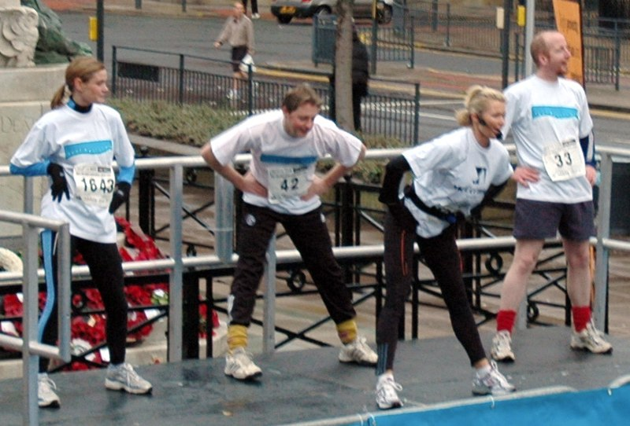

Una de las razones más importantes para realizar la entrada en calor es la prevención de lesiones físicas. Esto se debe a que permite la gradual puesta en funcionamiento de los músculos que serán utilizados durante la práctica deportiva dando lugar a que se encuentren preparados para resistir el esfuerzo al cual serán sometidos.
Además, ayuda a la prevención de dificultades cardíacas, las cuales se pueden producir al pasar rápidamente de un estado de reposo a uno completamente activo. La entrada en calor también sirve para afinar la coordinación y velocidad del cuerpo antes de la práctica deportiva evitando posibles torpezas durante su ejecución.
La realización de una buena entrada en calor otorga beneficios tanto para la salud como para el entrenamiento. Algunos de estos beneficios son los siguientes:
- Al elevar la temperatura corporal se activan una serie de enzimas que optimizan el rendimiento del cuerpo previniendo el desgarro miofibrilar y generando que los impulsos nerviosos sucedan con mayor velocidad.
- Se produce una mejor oxigenación pulmonar y una mayor irrigación sanguínea.
- Aumenta la circulación de hormonas como la insulina, la cual controla la cantidad de azúcar en sangre y la testosterona, encargada de producir un incremento en la fuerza.
- Liberación de la glucosa por circulación.
- Dilatación de las arterias y capilares que suministran sangre a los músculos.
- Produce una mejor regulación del ritmo cardíaco.
- El riesgo de lesiones se reduce considerablemente.
- Se predispone psicológicamente para realizar sacrificios y esfuerzos en actividades deportivas y físicas.
- Aumenta la coordinación en los movimientos, obteniendo mayores capacidades de resistencia, flexibilidad y fuerza, entre otras.

Foto de Paul Holloway disponible en Wikimedia Commons
.jpg){kind=link}